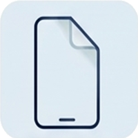
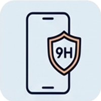
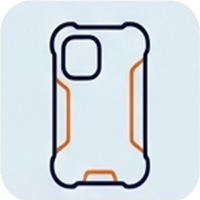
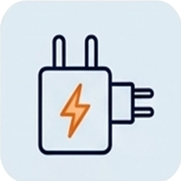
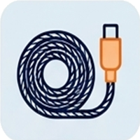
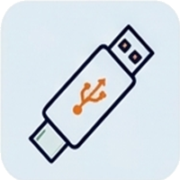

Retrouvez une sélection rigoureuse d'équipements pour protéger et recharger vos appareils. Disponible sans attendre au 26 Rue de la Poterie à Vitré.
Fini les câbles de mauvaise qualité qui s'abîment au bout d'une semaine : nous sélectionnons des marques durables et performantes.

Découpe au laser sur place pour n'importe quel smartphone, montre ou tablette. Technologie incassable qui absorbe les chocs sans se fendre, ultra-fine et agréable au toucher.

Protection en verre trempé haute clarté avec contours biseautés 2.5D. Traitement oléophobe résistant aux traces de doigts et aux rayures des clés.

Coins renforcés « Air Cushion », coques silicone souple couleur mate, transparentes anti-jaunissement ou étuis à rabat pour protéger à 360° votre téléphone.

Blocs secteurs haute performance 20W à 65W rechargeant 50% de batterie en moins de 30 minutes. Protection intégrée contre les surtensions et surchauffes.

Longueur 1m, 1m50 ou 2m. Embouts métalliques renforcés pour résister aux torsions du quotidien. Disponible en USB-C, Apple Lightning et Micro-USB.

Fixation robuste sur grille d'aération, ventouse tableau de bord ou guidon de vélo/trottinette. Maintien magnétique ou automatique à gravité pour GPS en toute sécurité.
Écouteurs filaires ergonomiques et True Wireless sans fil, adaptateurs Jack 3.5mm vers USB-C ou Lightning pour connecter votre autoradio ou votre casque préféré.

Augmentez la capacité de votre smartphone ou appareil photo. Clés USB avec embout USB standard + USB-C / Lightning pour sauvegarder vos photos facilement sur PC.
Pas d'erreur de modèle de coque ou de prise : nous vérifions directement avec votre smartphone devant vous.
La pose d'une protection écran est méticuleuse. Confiez-la à un professionnel équipé pour un résultat impeccable.
Pas de frais de livraison ni d'attente de colis perdu : repartez directement avec votre accessoire en main.